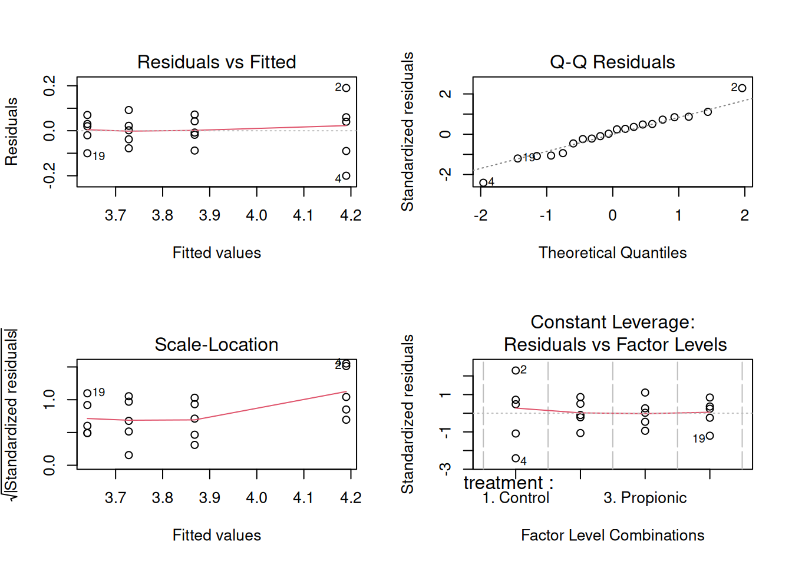
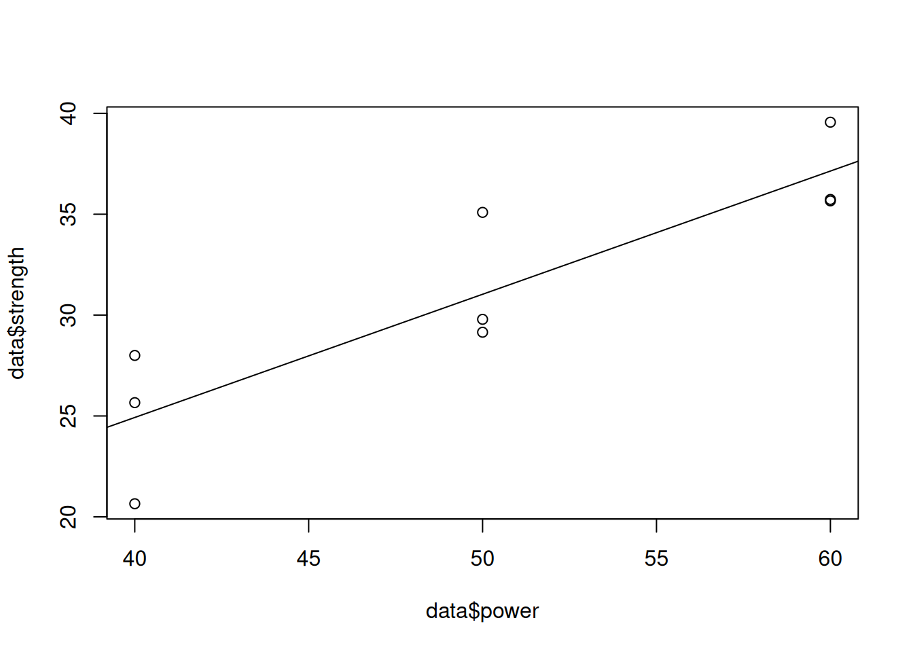

# Loading the dataset
library(car)
library(DescTools)
library(tidyverse)
library(lmtest)
data <- PlantGrowth3 One way ANOVA
3.1 ANOVA Table
Let us consider an example where we have results from an experiment to compare yields (as measured by dried weight of plants) obtained under a control and two different treatment conditions. The dataset is named as PlantGrowth and it can be found in the library car.
Let us print the anova table.
anova(lm(weight ~ group, data = data))Analysis of Variance Table
Response: weight
Df Sum Sq Mean Sq F value Pr(>F)
group 2 3.7663 1.8832 4.8461 0.01591 *
Residuals 27 10.4921 0.3886
---
Signif. codes: 0 '***' 0.001 '**' 0.01 '*' 0.05 '.' 0.1 ' ' 1The null hypothesis that all treatments are the same is rejected at a significance level of 5%.
Manual calculation: Let us perform the calculations by the anova() manually for better understanding.
# Finding the treatment means
treatment_means <- data %>%
group_by(group) %>%
summarise(mean_wt = mean(weight))
# Replicates
n <- 10
# Treatments
k <- 3
# Total experiments
N <- k*n
# grand mean
grand_mean <- mean(data$weight)
# Error sum of squares
data_with_treatment_mean <- merge(data, treatment_means)
SSE <- sum((data_with_treatment_mean$weight - data_with_treatment_mean$mean_wt)**2)
print(paste0("SSE = ", SSE))[1] "SSE = 10.49209"# Treatment sum of squares
SSTr <- n*sum((treatment_means$mean_wt - grand_mean)**2)
print(paste0("SSTr = ", SSTr))[1] "SSTr = 3.76634"# Mean sum of squared error
MSE <- SSE / (N - k)
print(paste0("MSE = ", MSE))[1] "MSE = 0.388595925925926"# Mean sum of square treatment
MSTr <- SSTr / (k - 1)
print(paste0("MSTr = ", MSTr))[1] "MSTr = 1.88317"# F-statistic
F <- MSTr / MSE
print(paste0("F-statistic = ", F))[1] "F-statistic = 4.84608786238014"# p-value
pf(F, k-1, N-k, lower.tail = FALSE)[1] 0.015909963.2 Confidence interval
Let us print the Bonferroni’s confidence intervals:
aov_object <- aov(lm(weight ~ group, data = data))
PostHocTest(aov_object, method = "bonferroni")
Posthoc multiple comparisons of means : Bonferroni
95% family-wise confidence level
$group
diff lwr.ci upr.ci pval
trt1-ctrl -0.371 -1.0825786 0.3405786 0.5832
trt2-ctrl 0.494 -0.2175786 1.2055786 0.2630
trt2-trt1 0.865 0.1534214 1.5765786 0.0134 *
---
Signif. codes: 0 '***' 0.001 '**' 0.01 '*' 0.05 '.' 0.1 ' ' 1Based on Bonferroni’s method, we observe that treatment 1 and treatment 2 are significantly different, but there is no difference between other pairs.
Manual calculation: Let us perform the calculations by the PostHocTest(method = "bonferroni") function manually for better understanding.
# Estimates of the pairwise difference of treatment means
print(paste0("Estimated difference between treatment 2 and treatment 1 = ", treatment_means$mean_wt[2] - treatment_means$mean_wt[1]))[1] "Estimated difference between treatment 2 and treatment 1 = -0.371"print(paste0("Estimated difference between treatment 3 and treatment 1 = ", treatment_means$mean_wt[3] - treatment_means$mean_wt[1]))[1] "Estimated difference between treatment 3 and treatment 1 = 0.494"print(paste0("Estimated difference between treatment 3 and treatment 2 = ", treatment_means$mean_wt[3] - treatment_means$mean_wt[2]))[1] "Estimated difference between treatment 3 and treatment 2 = 0.865"# Calculating the Bonferroni's confidence interval
# Significance level
alpha = 0.05
# Number of comparisons
k_dash = 3
# Upper bound of the confidence interval for the estimated difference between treatment 2 and treatment 1
(treatment_means$mean_wt[2] - treatment_means$mean_wt[1]) + (sqrt(MSE))*sqrt(2/n)*qt(1 - alpha/(2*k_dash), N - k)[1] 0.3405786# Lower bound of the confidence interval for the estimated difference between treatment 2 and treatment 1
(treatment_means$mean_wt[2] - treatment_means$mean_wt[1]) - (sqrt(MSE))*sqrt(2/n)*qt(1 - alpha/(2*k_dash), N - k)[1] -1.082579Similarly, we can calculate the Bonferroni’s confidence interval of other estimates.
Bonferroni’s confidence intervals are overly conservative. Let us find the confidence intervals basead on Tukey’s method:
PostHocTest(aov_object, method = "hsd")
Posthoc multiple comparisons of means : Tukey HSD
95% family-wise confidence level
$group
diff lwr.ci upr.ci pval
trt1-ctrl -0.371 -1.0622161 0.3202161 0.3909
trt2-ctrl 0.494 -0.1972161 1.1852161 0.1980
trt2-trt1 0.865 0.1737839 1.5562161 0.0120 *
---
Signif. codes: 0 '***' 0.001 '**' 0.01 '*' 0.05 '.' 0.1 ' ' 1Manual calculation: Let us perform the calculations by the PostHocTest(method = "hsd") function manually for better understanding.
The calculation of the estimates of the pairwise difference of treatment means is the same as that for Bonferroni’s method.
# Calculating the Tukey's confidence interval
# Significance level
alpha = 0.05
# Number of comparisons
k_dash = 3
# Upper bound of the confidence interval for the estimated difference between treatment 2 and treatment 1
(treatment_means$mean_wt[2] - treatment_means$mean_wt[1]) + (sqrt(MSE))*sqrt(2/n)*(1/sqrt(2))*qtukey(1 - alpha, nmeans = 3, df = N - k)[1] 0.3202161# Lower bound of the confidence interval for the estimated difference between treatment 2 and treatment 1
(treatment_means$mean_wt[2] - treatment_means$mean_wt[1]) - (sqrt(MSE))*sqrt(2/n)*(1/sqrt(2))*qtukey(1 - alpha, nmeans = 3, N - k)[1] -1.062216Similarly, we can calculate the Tukey’s confidence interval of other estimates.
3.3 Model assumptions check
The conclusions of the statistical tests and the confidence intervals are based on the assumption that random error is normally distributed with mean 0 and constant variance, i.e., \(\epsilon_{ij} \sim N(0, \sigma^2)\).
The diagnostic plots and statistical tests for checking model assumptions can be found here.
3.4 Contrasts
3.4.1 Class comparison
This is an example to use orthogonal contrasts to answer questions of interest. The data rice_seed_data.csv consists of the shoot dry weight (in mg) of an experiment to determine the effect of seed treatment by acids on the early growth of rice seeds.
The investigator had several specific questions in mind from the beginning: -Do acid treatments affect seedling growth? - Is the effect of organic acids different from that of inorganic acids? - Is there a difference in the effects of the two different organic acids?
We will create orthogonal contrasts, and perform an ANOVA analysis to answer these questions.
rice_data <- read.csv('rice_seed_data.csv')
anova(lm(growth~treatment, data = rice_data))Analysis of Variance Table
Response: growth
Df Sum Sq Mean Sq F value Pr(>F)
treatment 3 0.87369 0.291232 33.874 3.669e-07 ***
Residuals 16 0.13756 0.008597
---
Signif. codes: 0 '***' 0.001 '**' 0.01 '*' 0.05 '.' 0.1 ' ' 1c1 <- c(3, -1, -1, -1)
c2 <- c(0, -2, 1, 1)
c3 <- c(0, 0, 1, -1)
# Contrast matrix
mat.contrast <- cbind(c1, c2, c3)
colnames(mat.contrast) <- paste0("c",1:3)
# Converting treatment to a factor variable
rice_data$treatment <- as.factor(rice_data$treatment)
contrasts(rice_data$treatment) <- mat.contrast
# ANOVA table
model <- aov(growth ~ treatment, data = rice_data,
contrasts = list(treatment = mat.contrast))
# Splitting the Treatment sum of squares into independent
# orthogonal contrast components
summary.aov(model,split = list(treatment = list("Control vs acid"=1,
"Inorganic vs organic" = 2, 'Between organic'=3))) Df Sum Sq Mean Sq F value Pr(>F)
treatment 3 0.8737 0.2912 33.874 3.67e-07 ***
treatment: Control vs acid 1 0.7415 0.7415 86.244 7.61e-08 ***
treatment: Inorganic vs organic 1 0.1129 0.1129 13.126 0.00229 **
treatment: Between organic 1 0.0194 0.0194 2.252 0.15293
Residuals 16 0.1376 0.0086
---
Signif. codes: 0 '***' 0.001 '**' 0.01 '*' 0.05 '.' 0.1 ' ' 1We conclude that there is no statistically significant difference between the effect of organic acids. However, there is a statistically significant difference between the effect of inorganic and organic acids, and an even higher statistically significant difference between the weight of seeds in the control group and the weight seeds treated with acid.
3.4.2 Model assumptions check
3.4.2.1 Visual test (Mean error = 0)
par(mfrow = c(2,2))
plot(model)
Based on the plot of the residuals against fitted values, the average residual is close to zero. Thus, the assumption of the error term having a zero mean is satisfied.
3.4.2.2 Homoscedasticity test
bptest(model)
studentized Breusch-Pagan test
data: model
BP = 6.8284, df = 3, p-value = 0.07757Based on the Breusch Pagan test, the homoscedasticity assumption is satisfied.
3.4.2.3 Normality test
shapiro.test(model$residuals)
Shapiro-Wilk normality test
data: model$residuals
W = 0.97225, p-value = 0.8016Based on Shapiro’s test, the residuals are normally distributed.
Thus, all the model assumptions are satisfied.
3.4.3 Trend comparison
This is an example to identify if there is a linear, quadratic, or higher order relationship between a continuous treatment and the response.
Consider the data laser_power.csv, which consists of laser power, and the corresponding strength of the material obtained using a machining process involving the laser. The question to be answered is if there is a linear or quadratic relationship between the laser power and strength of the material.
data <- read.csv('laser_power.csv')
data$power <- as.factor(data$power)
# Linear contrast
c1 <- c(-1, 0, 1)
# Quadratic contrast
c2 <- c(1, -2, 1)
mat.contrast <- cbind(c1, c2)
model <- aov(strength ~ power, data = data,
contrasts = list(power = mat.contrast))
summary.aov(model, split = list(power = list("linear" = 1,
"quadratic" = 2))) Df Sum Sq Mean Sq F value Pr(>F)
power 2 224.18 112.09 11.318 0.00920 **
power: linear 1 223.75 223.75 22.593 0.00315 **
power: quadratic 1 0.44 0.44 0.044 0.84083
Residuals 6 59.42 9.90
---
Signif. codes: 0 '***' 0.001 '**' 0.01 '*' 0.05 '.' 0.1 ' ' 1We conclude that there is a linear relationship between laser power and strength. This can be seen visually as well as below.
data$power <- as.integer(substr(data$power,5,8))
plot(data$power, data$strength)
abline(lm(strength~power, data = data))